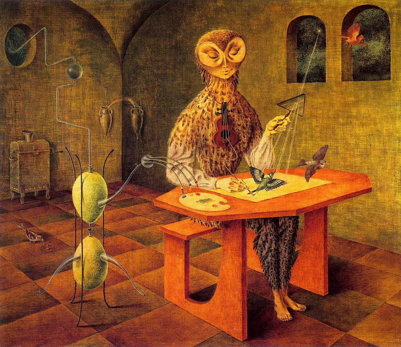
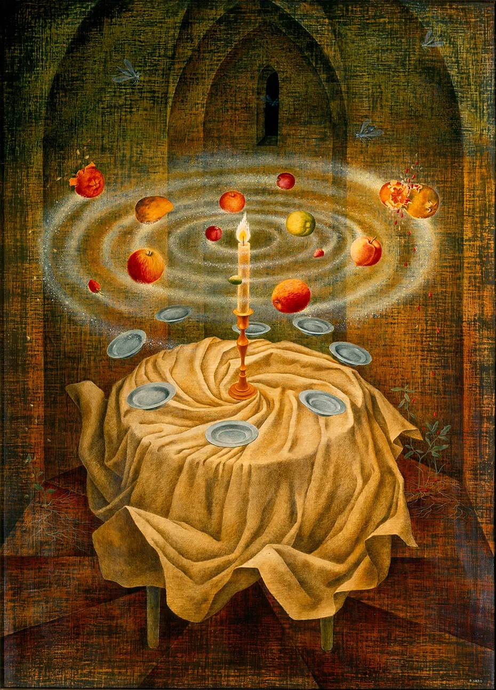
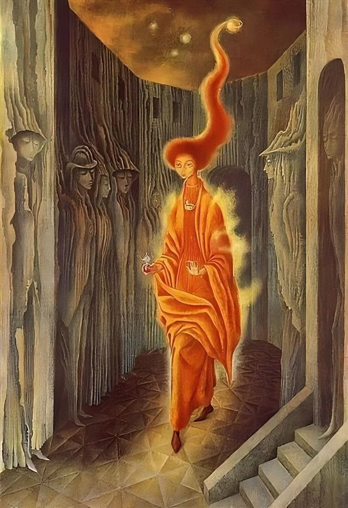
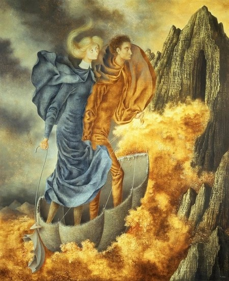
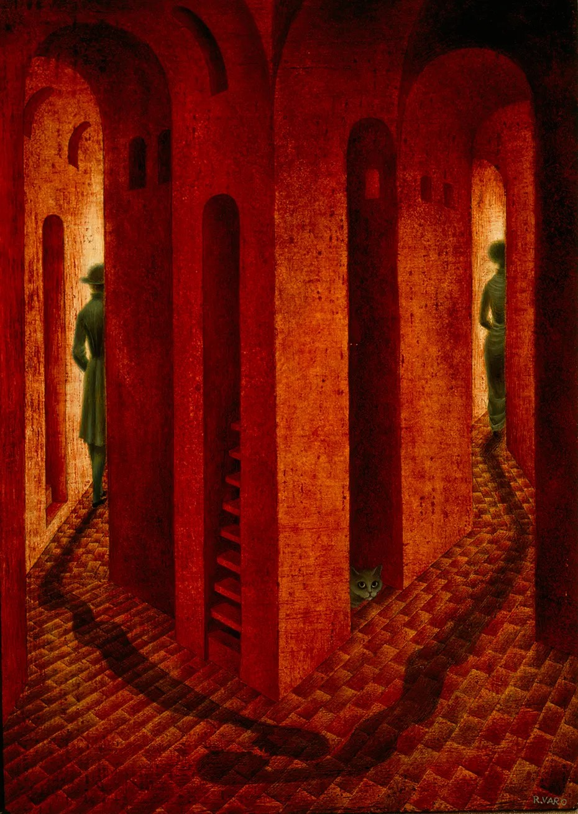
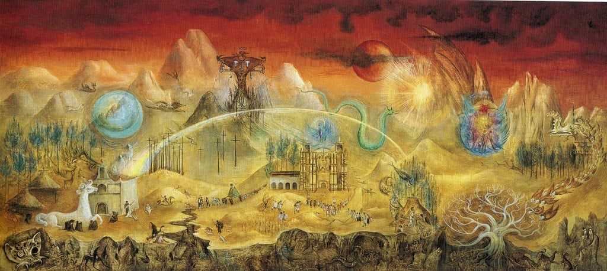

Remedios Varo, la bruja madre del Surrealismo

¿Quién fue Remedios Varo?
Remedios Varo Uranga, fue una pintora surrealista nacida el 16 de diciembre de 1908 en Girona, España. Estudió en la Real Academia de Bellas Artes de San Carlos de Valencia y se involucró en círculos artísticos y literarios en España. En 1931, se trasladó a Barcelona, donde se unió al grupo surrealista catalán y se casó con el poeta Benjamin Péret.
Durante la Guerra Civil Española, Varo y Péret se exiliaron a París, donde ella continuó desarrollando su estilo artístico surrealista. En 1941, la pareja se trasladó a México para escapar de la Segunda Guerra Mundial y se establecieron en la Ciudad de México. Varo se integró en la comunidad de artistas surrealistas exiliados en México, donde colaboró con otros destacados artistas, como Leonora Carrington y André Breton. Remedios Varo falleció a la edad de 54 años en la Ciudad de México.
Obras destacadas: Los mundos oníricos de Remedios Varo
- Creación de las Aves, 1957.
- Naturaleza Muerta Resucitada, 1963.
- La Llamada, 1961.
- La Huida, 1958.
- La Despedida, 1958.





Las influencias de Remedios Varo
- Benjamin Péret
- Leonora Carrington
- André Breton
- Wolfgang Paalen
Poeta y escritor surrealista francés. Segundo esposo de Remedios Varo. Se trasladaron juntos a México durante la Segunda Guerra Mundial, donde se integraron en la comunidad artística y literaria exiliada.
Artista perteneciente al círculo surrealista y amiga cercana de Varo en México. Compartieron una conexión artística y personal significativa.
Líder del movimiento surrealista, Breton fue una figura influyente en la vida de Varo. Se encontró con él en París, donde se exilió durante la Guerra Civil Española.
Artista y teórico austríaco-mexicano que también fue parte del movimiento surrealista. Paalen influyó en Varo en términos de su enfoque alquímico y esotérico en el arte. Participaron juntos en algunas exposiciones.
Leonora Carrington, la otra bruja del Surrealismo
Destacada pintora y escritora surrealista nacida el 6 de abril de 1917 en Clayton Green, Lancashire, Inglaterra, y fallecida el 25 de mayo de 2011 en la Ciudad de México. Carrington provenía de una familia acomodada, y desde joven mostró un interés y habilidad innatos para el arte.
En la década de 1930, se relacionó con Max Ernst, con quien inició una relación amorosa y quién la llevó a unirse al círculo surrealista en París, donde participó activamente en el movimiento. Sin embargo, la Segunda Guerra Mundial interrumpió su vida en Europa, y Ernst fue arrestado por las autoridades francesas. Tras sufrir una crisis emocional fue internada en un hospital psiquiátrico en España, posteriormente escapó de la institución, vivió experiencias tumultuosas durante la guerra, y finalmente buscó refugio en México en 1942.
Carrington encontró un nuevo hogar en México, con una comunidad artística acogedora, donde continuó desarrollando su obra. Destacó por sus pinturas surrealistas, llenas de simbolismo, mitología celta, elementos oníricos, la alquimia y lo místico. Algunas de sus obras más conocidas incluyen "El mundo mágico de los mayas" y "La Pomme d'Adam".
Leonora Carrington y Remedios Varo son dos artistas que comparten una conexión a través de su participación en el movimiento surrealista y sus historias de vida similares en algunos aspectos. Aunque no eran contemporáneas en términos de su tiempo en el movimiento surrealista, ambas compartieron experiencias como mujeres artistas que buscaron su propio camino creativo en un mundo dominado por hombres
Página oficial

Para todos aquellos admiradores de esta gran artísta, en esta página es una tienda en línea dedicada a su extensa obra y en ella se puede: